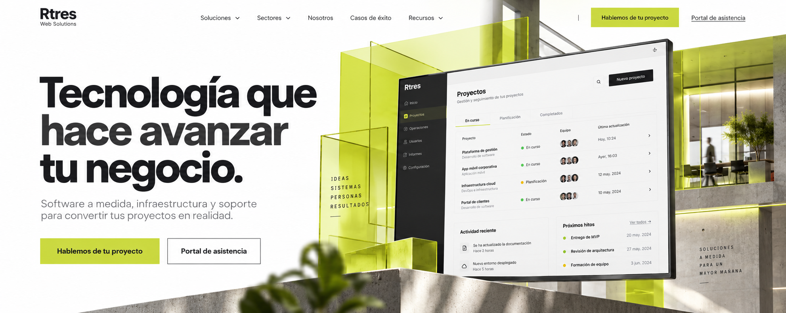
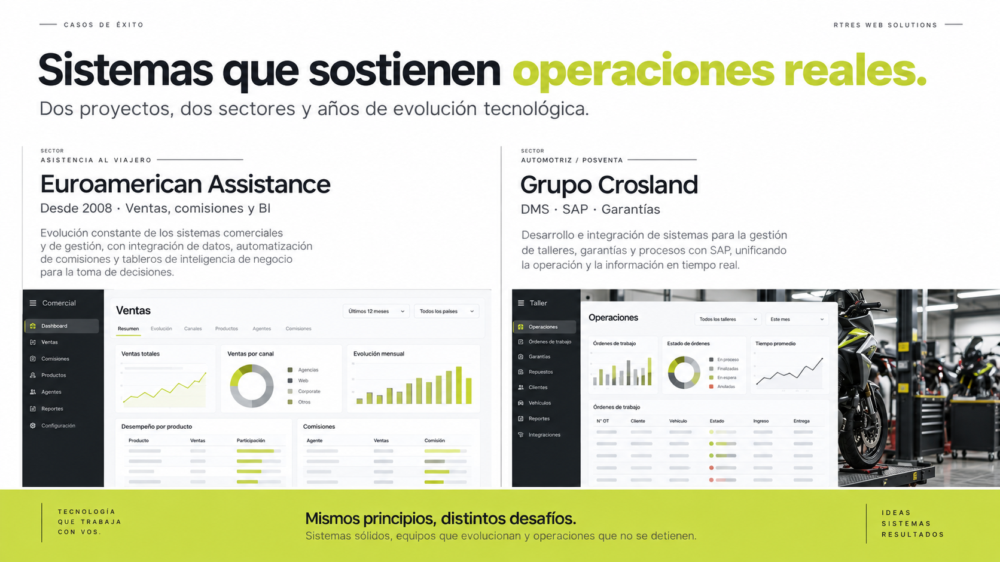
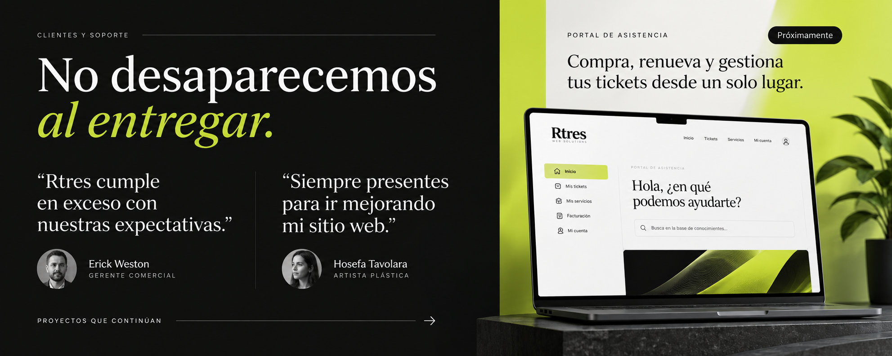

Desde la idea hasta la operación diaria, un solo equipo para resolver necesidades tecnológicas.
SoftwareInfraestructuraSoporteContinuidad
Lo que hacemos
No vendemos piezas sueltas.
Construimos la base tecnológica de tu empresa.
01
Software a medida
Plataformas que ordenan procesos, automatizan tareas y dan visibilidad al negocio.
↗ 02Apps y experiencias web
Productos digitales claros, rápidos y pensados para las personas que los usan.
↗ 03Integración y automatización
Conectamos ERP, facturación, inventario y servicios para que la información fluya.
↗ 04Hosting, dominios y soporte
La operación técnica que mantiene tu presencia y tus sistemas disponibles.
↗

Empecemos
Cuéntanos qué necesita tu negocio.
Analizamos tu contexto, definimos el camino y construimos una solución que puedas sostener.